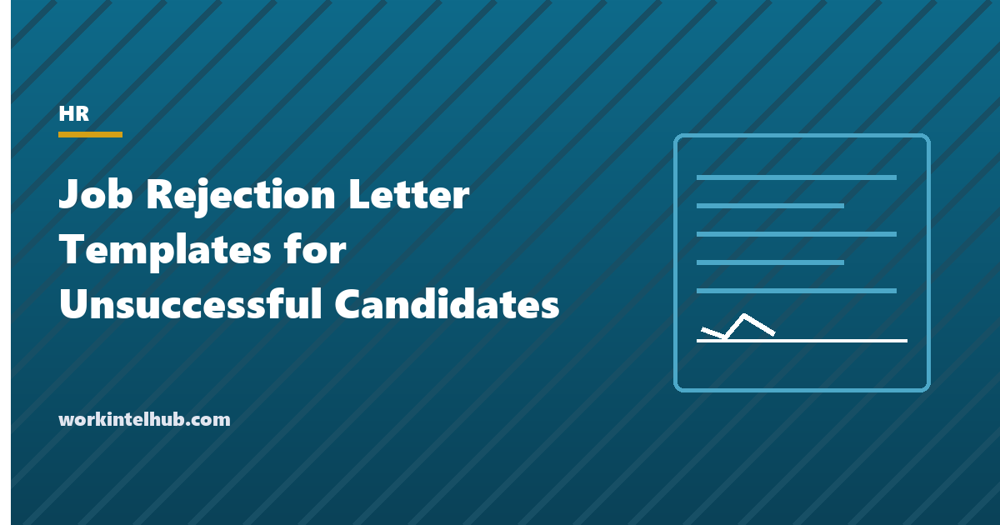

Job Rejection Letter Templates for Unsuccessful Candidates

Every candidate who is not hired becomes someone who talks about your company, applies again, buys from you or refers a friend, or does none of those things because nobody told them what happened. A rejection letter is cheap to send and expensive to skip: candidates who hear nothing rate the employer lowest of all, and the ones who interviewed and heard nothing tell people. A good rejection is prompt, courteous, honest about the decision and, where the candidate invested real time, specific about why.
Eight templates cover the stages and situations: screening, first interview, final interview, an internal candidate, a withdrawn or paused role, an overqualified or salary-mismatched candidate, a rejection following a background check (which has legal steps), and the letter to a strong candidate you want to keep. The Excel workbook holds a candidate communication log so no one is left waiting.
Download the templates
Free files: Word, Excel and PDF
Three files, free, no email required. Word to edit, Excel to track, PDF to print or share.
Templates open in Microsoft Word, Excel, Google Docs and Sheets, LibreOffice and any PDF reader. Free to use and adapt for your organisation.
The eight letters
| Letter | When | Tone |
|---|---|---|
| After application screening | Application not progressed | Brief, courteous, no reason |
| After a first interview | After a phone or first-round interview | Warm, one specific positive, one specific reason |
| After a final interview | After a final round, task or presentation | Specific reason, feedback offered, stay in touch |
| Internal candidate | An employee who applied and was not appointed | Direct, developmental, a plan and a meeting |
| Role withdrawn or put on hold | The role is paused or cancelled | Honest about the business reason, keep in touch |
| Overqualified or salary mismatch | The fit is wrong in a way that is about the role | Direct, respectful of their time |
| Candidate rejected after a background check | A conditional offer withdrawn on a background report | Formal; follows the FCRA steps |
| Keeping a strong candidate warm | You want to hire them, just not now | Specific, a timeframe, a next step |
What to say, and what not to
- Say the decision in the first two sentences. Candidates skim for it; burying it reads as evasive.
- Give a reason after an interview. One honest, specific sentence about the role or the comparison, not about the person: "closer experience with X" rather than "you were not a culture fit".
- Do not give a reason you cannot defend. Reasons that reference age, family plans, health, accent, appearance or anything else protected are discrimination claims in writing. Reasons about skills, experience and the comparison with other candidates are not.
- Thank them specifically where they invested time: the task, the presentation, the second trip.
- Offer feedback by phone after final rounds, and give it if asked; written feedback is riskier and less useful.
- Say whether you mean "stay in touch". If you do, say for what and when; if you do not, leave it out.
The legal points
A rejection letter is a record. It should be consistent with the reasons in the interview notes, because inconsistency is how discrimination claims are proven. Keep application materials and notes for at least one year under federal record-keeping rules (two years for some employers, longer in some states), and longer if a charge is filed. Rejections based on a background report are regulated by the Fair Credit Reporting Act: a pre-adverse action notice with a copy of the report and the summary of rights, a reasonable waiting period (five business days is standard), then an adverse action notice with the agency's details and the candidate's rights; several states and cities add fair-chance rules on criminal history. The seventh template follows that sequence. Internal candidates deserve the reasons in person before the appointment is announced; the development plan is what turns the rejection into retention. The interview questions and reference check pages cover the stages before the letter.
Key takeaways
- Send a rejection to every candidate, promptly: two weeks after screening, days after an interview.
- State the decision first, give one honest reason after an interview, and never a reason that touches a protected characteristic.
- Background-check rejections follow the FCRA sequence: pre-adverse notice, wait, adverse notice.
- Tell internal candidates in person with a development plan; keep strong external candidates warm with a timeframe.
Frequently asked questions
Should I give a reason in a job rejection letter?
After an interview, yes: one honest, specific sentence about the role or the comparison with other candidates, such as closer experience in a named area. After screening, a reason is not expected. Never give a reason that touches age, health, family, religion, national origin or any other protected characteristic.
How soon should candidates be told they were unsuccessful?
Within two weeks of the closing date for screening decisions and within three to five working days of an interview. Candidates who reached a final round should hear by phone before the letter if possible. The log in the download flags anyone waiting longer.
What are the legal requirements for rejecting a candidate after a background check?
Under the Fair Credit Reporting Act: a pre-adverse action notice with a copy of the report and the summary of rights, a reasonable waiting period (five business days is standard) for the candidate to dispute it, then an adverse action notice naming the agency and the candidate's rights. Many states and cities add fair-chance rules on criminal history.
How do I reject an internal candidate?
In person, before the appointment is announced, with specific developmental reasons and a plan to prepare them for the next opportunity. Follow up in writing. Internal candidates who hear second-hand or without reasons often leave.
Should I keep rejected candidates' details?
Yes, for at least one year under federal record-keeping rules and longer in some states, and with the candidate's permission if you intend to contact them about future roles. Tell them how long you will keep their details and how to opt out.